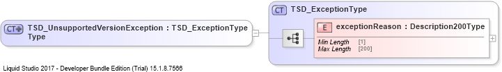

| Definition Type: | ComplexType |
| Name: | TSD_UnsupportedVersionExceptionType |
| Namespace: | urn:gs1:tsd:query_by_gtin_response:xsd:1 |
| Type: | tsd_common:TSD_ExceptionType |
| Containing Schema: | QueryByGtinResponse.xsd |
| Abstract |
|  |
|
|
|||||||||
|
|
| query_by_gtin_response:unsupportedVersionException | |